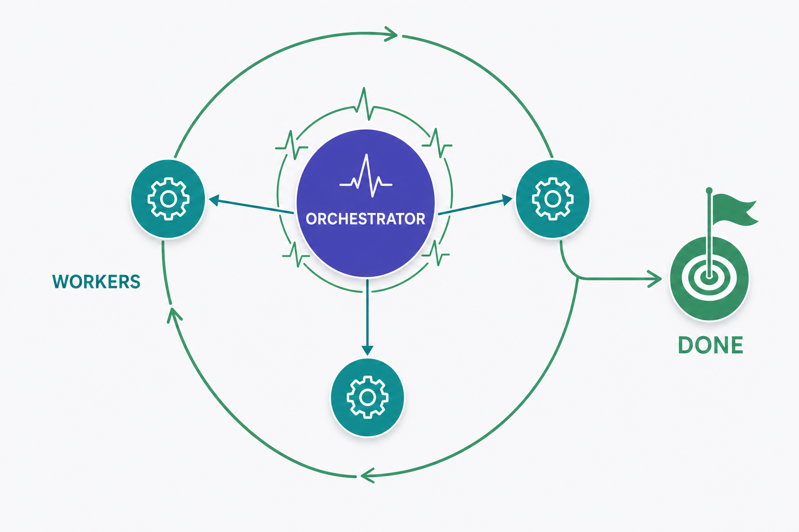
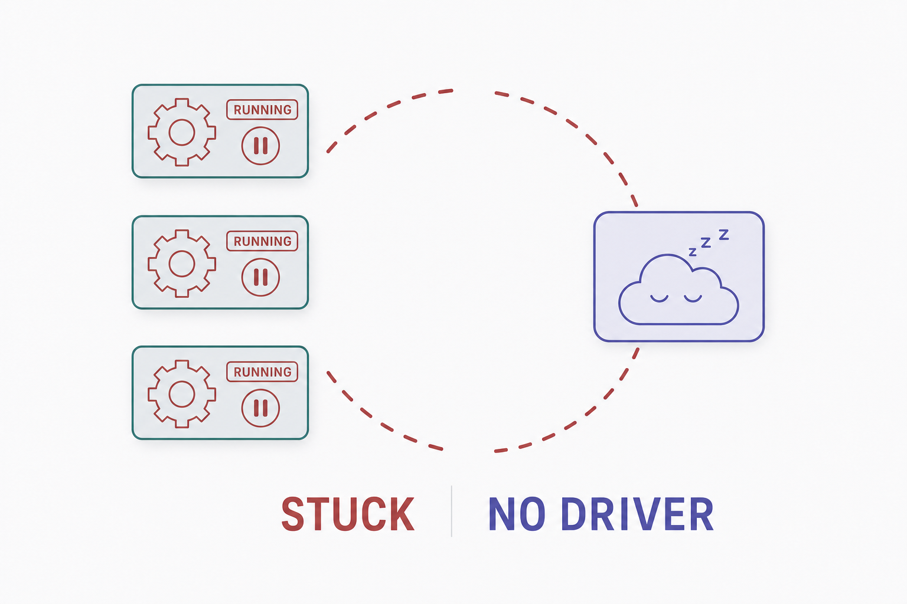
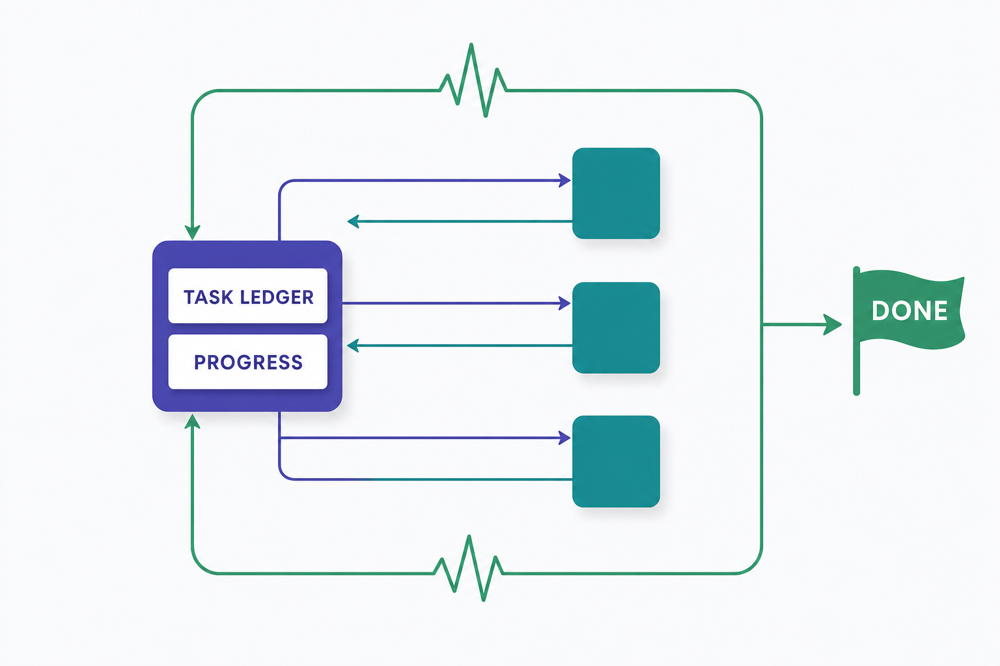
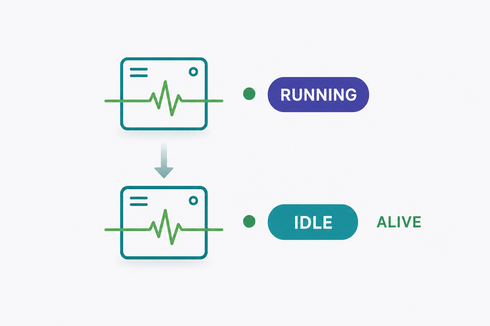
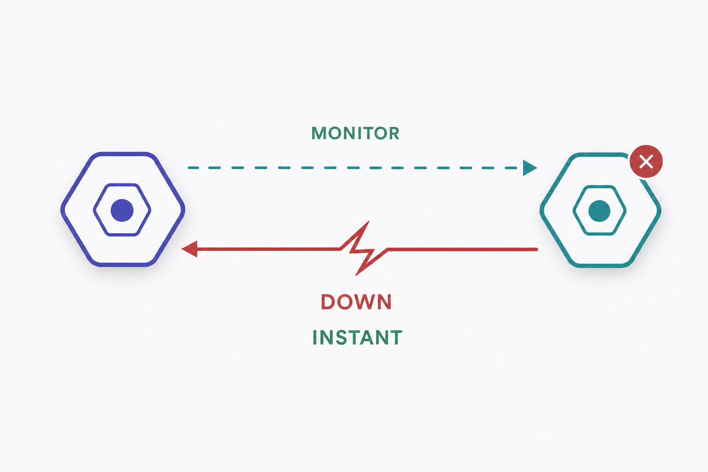
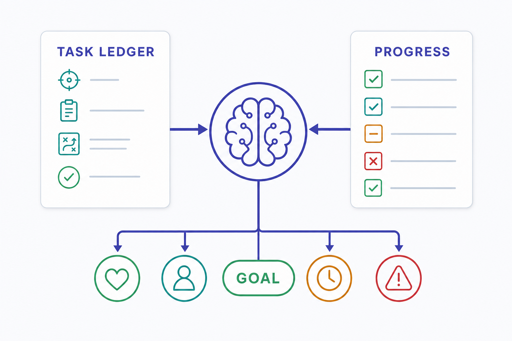
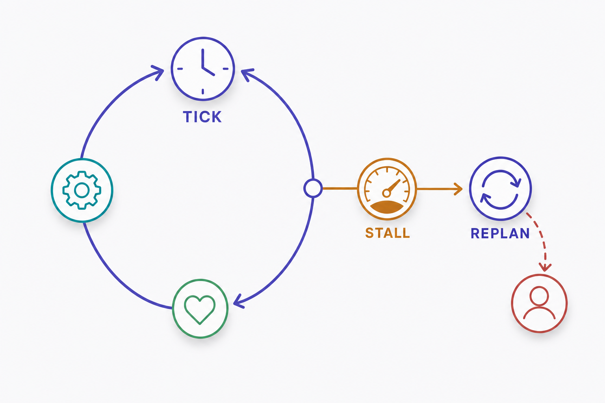
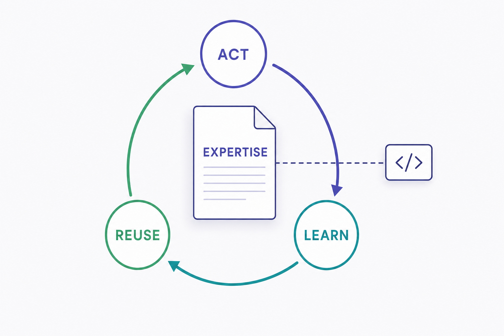
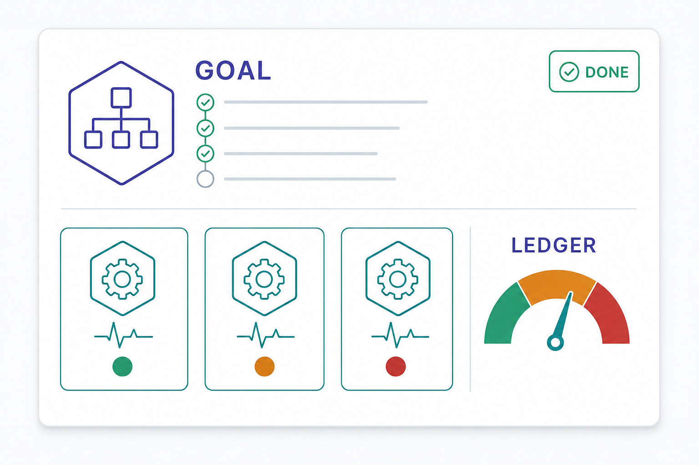

Self-Healing Orchestrator Leadership & Expertise
Turn the orchestrator from a reactive meta-agent into an autonomous, self-healing project leader. Workers self-correct their own state (a waiting worker becomes :idle, never a phantom :running); the leader keeps a durable goal + progress ledger, reads what has actually been done, and drives the project to DONE — driving a worker, fanning out new workers, or reporting completion with recommendations — all while the operator walks away. Every orchestrator, not just the project one, carries expertise: a leadership playbook plus a self-improving, code-validated domain mental model.
orchestrator / leader worker / healing liveness / heartbeat stall / replan phantom / error

DONE while the operator is away.Purpose
The platform already reacts well: the LivenessReaper (issue worker-terminal + issue orchestrator-stuck) reaps phantom :running workers to :error and re-engages the owning orchestrator, and reconciles wedged orchestrator turns to :idle; the turn-idle watchdog (issue orch-stall) recovers a byte-silent turn. But every one of those mechanisms is reactive — it cleans up something that is already dead, stuck, or silent. The system cannot yet keep itself moving forward. This plan adds the missing proactive and leadership layers so the operator can hand the orchestrator a goal, walk away, and trust the system to (a) keep every agent in an honest state, (b) drive the work to completion, and (c) heal itself end-to-end when any part stalls — and to do all three with accumulated expertise rather than a static prompt.
Problem
Four structural gaps stand between today's reactive cleanup and true fire-and-walk-away autonomy:
- Workers have no honest "waiting" state. A worker is written
:runningoptimistically the instantSession.Supervisor.start_session/1returns (orchestrator/tools.ex:355,632). The only inactivity mechanism —Session.Server's idle timer (idle_ms= 300 s) — kills the child and emits%Event.Error{reason: :idle_timeout}, mapping to:error(session/server.ex:458-480). There is no path that demotes a live, quiescent worker to:idlewhile keeping its session alive. The reset signal is raw stdout bytes (server.ex:428), so a worker is "active" if it prints, not if it works. A worker that finished its thought and is simply waiting looks identical to a runaway — both read:runningforever, then both die to:error. - The leader has no memory of the goal or the progress. The orchestrator brain carries no stored objective, plan, or definition-of-done. The single autonomous re-engagement —
Queue.maybe_auto_resume/2on a{:worker_terminal}signal — fires a generic prompt: "Worker X finished; review its work and decide next steps" (queue.ex:601-610), carrying only a name and an ok/error flag. The brain must re-derive the entire plan from CLI session memory every turn, and it cannot inspect the working tree, git diff, or test results — it can only read a worker's self-reportedfinal_message. There is no Task Ledger, no Progress Ledger, no notion of "what remains." - Nothing jump-starts a stalled leader. The orchestrator only acts when an operator types or a worker returns a terminal.
LivenessReaper.sweep_orchestratorsflips a wedged orchestrator's status to:idlebut never enqueues a turn. Resume turns self-extinguish: a resume that dispatches no new worker cannot re-trigger itself (maybe_consume_pending_resumeclears the flag first). With zero live workers and no inbound signal, an idle orchestrator with unfinished work simply sits. The queue is in-memory only, so a process restart silently drops the backlog. - No expertise — for any orchestrator. The system prompt is static meta-agent guidance with a hardcoded five-role list (builder/reviewer/tester/documenter/debugger). The role-template half of "expertise" exists (
Orchestrator.Templatesversioned registry +SUBAGENT_MAPinjection), but it drops thetoolsfield (template.ex:9) and there is no self-improving, code-validated domain mental model — nothing that learns. Every orchestrator, Claude or pi, is the same blank conductor every run.

:running then die to :error; the idle leader has no goal, no progress model, and nothing to wake it.Solution
Build the proactive + leadership + expertise layers on top of the existing reactive foundation, reusing every seam already in place (the per-orchestrator FIFO Queue, the worker_terminal PubSub signal, LivenessReaper, SystemPrompt.build/1, Orchestrator.Templates, StackLayers). The design is a dual-ledger control loop (Magentic-One) wrapped around the OTP supervision tree, fed by authoritative push liveness (Process.monitor) rather than LLM self-report.
| Layer | What it guarantees | Core mechanism |
|---|---|---|
| 1 · Worker state hygiene proactive | A live worker that stops doing meaningful work becomes :idle (alive, resumable) — never a phantom :running, never killed-to-:error for merely waiting. |
heartbeat_at column bumped on meaningful events; a soft quiescence timer demotes :running → :idle without killing; a new LivenessReaper pass demotes live-but-stale workers. |
| 2 · Push liveness instant | A dead worker is known the instant it dies, not 60 s later — and is never falsely reaped while alive. | The long-lived per-orchestrator Queue Process.monitors each dispatched worker pid; a DOWN with no preceding terminal synthesizes worker_terminal{ok?: false} immediately. |
| 3 · Goal & Progress Ledger durable | The leader has a persistent objective, plan, and definition-of-done, plus a per-turn record of "what's done vs what remains." | New task_ledgers + progress_entries tables; the brain records a Progress Ledger each turn via new tools; auto-resume seeds the goal + ledger. |
| 4 · Autonomous drive loop self-driving | An idle orchestrator with unfinished work is jump-started; stalls trigger replanning; only a genuine blocker escalates to the away human. | A supervised Orchestrator.Driver tick + boot-resume sweep; a stall_count→replan rule; a per-key circuit breaker on repeated failures; a per-turn deadline watchdog; :holding + PushNotification as last-resort escalation. |
| 5 · Expertise (all orchestrators) learning | Every orchestrator drives better over time: a shared leadership playbook + a self-improving, code-validated domain mental model + per-role tool scoping + recalled lessons. | A leader_expertise_block in SystemPrompt; file-based versioned expertise (.md) with an ACT→LEARN→REUSE self-improve job; re-introduced tools scoping; a reflections table injected next run. |
The through-line: state is honest (1–2), the goal is durable (3), the loop never stops until DONE or a real blocker (4), and the leader gets smarter every run (5). Phases 1–2 make the substrate trustworthy; 3–4 are the leadership engine; 5 is the expertise that the engine runs on. A BEAM/node restart becomes a resume from the ledger, not a cold start.

DONE.Relevant Files
Existing Files
- existing
lib/repo_builder/agents/agent.ex— worker schema; addheartbeat_at; status enum[:idle,:running,:error,:holding]stays unchanged (the demotion reuses:idle). - existing
lib/repo_builder/agents.ex— addtouch_heartbeat/1,list_stale_live_running/1(live-but-quiescent), keeplist_stuck_running/1(phantom). - existing
lib/repo_builder/session/server.ex— bumpheartbeat_aton meaningful events; add a softquiescencetimer that demotes:running → :idlewithout killing (distinct from theidle_mskill timer); keep the synthesized-terminal backstop. - existing
lib/repo_builder/logs/writer.ex—update_status_quietly/2is the terminal-status mapper; bumpheartbeat_atinpersist/2on normalized events. - existing
lib/repo_builder/session/liveness_reaper.ex— add a third sweep passsweep_idle_workers/1: live workers:runningpast a quiescence grace →:idle(not:error); makereconcile_phantom_orchestratoroptionally re-drive. - existing
lib/repo_builder/orchestrator/queue.ex—Process.monitordispatched worker pids; onDOWN-without-terminal synthesizeworker_terminal; seed auto-resume with the goal + ledger; consume Driver drive-ticks. - existing
lib/repo_builder/orchestrator/server.ex— record a Progress Ledger entry on turn flush; arm a per-turn deadline; expose turn outcome to the ledger. - existing
lib/repo_builder/orchestrator/tools.ex&tool_catalog.ex— add leader tools:set_goal,record_progress,report_complete,get_ledger, read-onlyinspect_repo(git status / changed files / read file in working_dir); apply per-workertoolsallowlist increate_agent. - existing
lib/repo_builder/orchestrator/system_prompt.ex— injectleader_expertise_block/0(the drive-loop playbook + ledger protocol), the per-stack expertise, and recentreflections; replace the hardcoded five-role list with the Templates registry. - existing
lib/repo_builder/orchestrator.ex&orchestrator/orchestrator.ex— context for ledger/stall/heartbeat queries;list_drivable/0(active goal,:idle, within budget). - existing
lib/repo_builder/orchestrator/template.ex&templates.ex— re-introduce thetoolsfrontmatter field (reverse thetemplate.ex:9drop) for per-role tool scoping. - existing
lib/repo_builder/stack_layers/stack_layer.ex&stack_layers.ex— the staticreasoningstring is complemented by a file-based, self-improving expertise (versioned.mdkeyed by domain, often the layername) rendered into the stack contract; no schema change. - existing
lib/repo_builder/application.ex— superviseOrchestrator.Driver(after the Queue registry/supervisor, alongsideLivenessReaper). - existing
config/config.exs&config/test.exs— new knobs::sessionquiescence_ms;:orchestratordrive_interval_ms,drive_on_boot,max_stall,escalate_after_stall,turn_deadline_ms,breaker_max_failures,breaker_cooldown_ms,experts_dir; reaper idle-demotion toggle. - existing
lib/repo_builder/dashboard.ex— broadcasts for ledger/heartbeat/stall updates (broadcast_ledger_updated); reusebroadcast_worker_terminal/2. - existing
lib/repo_builder_web/live/console_live.ex&components/console_components.ex— surface the goal, progress ledger, heartbeat, stall counter, and an "escalated / awaiting human" banner.
New Files
- new
priv/repo/migrations/<ts>_add_heartbeat_at_to_agents.exs—heartbeat_at :utc_datetime_usec+ index. - new
priv/repo/migrations/<ts>_create_task_ledgers.exs— goal, facts, guesses,plan(jsonb steps), definition_of_done,statusenum,stall_count, FKs to orchestrator + project. - new
priv/repo/migrations/<ts>_create_progress_entries.exs— per-turn snapshot (satisfied/on_track/looping/made_progress/next_agent/next_instruction/summary). - new
priv/repo/migrations/<ts>_create_orchestrator_reflections.exs— verbal lessons (project_id, goal, lesson). - new
priv/orchestrator/experts/<domain>/0001.md— seed mental models as versioned.md(read-only root; a writableexperts_dirshadows by version, exactly likeOrchestrator.Templates). No migration — expertise is file-based. - new
lib/repo_builder/orchestrator/task_ledger.ex— TypedStruct + Ecto schema for the durable goal/plan. - new
lib/repo_builder/orchestrator/progress_entry.ex— Ecto schema for a per-turn progress snapshot. - new
lib/repo_builder/orchestrator/ledgers.ex— context:upsert_goal,record_progress,current/1,bump_stall/1,mark_done/escalated. - new
lib/repo_builder/orchestrator/driver.ex— supervised GenServer: periodic drive tick + boot-resume sweep + escalation. - new
lib/repo_builder/orchestrator/breaker.ex— native ETS-backed circuit breaker (open/half-open/closed + cooldown) keyed by harness/model/tool/role;ask/1before spawn,fail/1/succeed/1trip + reset; reroute on open. - new
lib/repo_builder/expertise.ex+lib/repo_builder/expertise/self_improve.ex— ACT→LEARN→REUSE over versioned.mdmental models (dual-root, likeOrchestrator.Templates): render expertise into prompts, run the post-build self-improve job that writes a newNNNN.mdversion, validate against code. - new
lib/repo_builder/orchestrator/reflections.ex— write/read verbal lessons; render the last N into the system prompt. - new
test/repo_builder/session/worker_proactive_idle_test.exs— quiescent worker →:idle, stays alive/resumable; active worker untouched. - new
test/repo_builder/orchestrator/worker_monitor_test.exs—DOWN-without-terminal → instant syntheticworker_terminal. - new
test/repo_builder/orchestrator/ledgers_test.exs— goal upsert, progress recording, stall bump, done/escalate. - new
test/repo_builder/orchestrator/driver_test.exs— drive tick jump-starts an idle orchestrator with unfinished work; stall→replan; escalation; boot-resume. - new
test/repo_builder/orchestrator/breaker_test.exs— trips after N failures, fails fast while open, half-opens after cooldown, closes on success. - new
test/repo_builder/expertise_test.exs+test/repo_builder/expertise/self_improve_test.exs— render, self-improve sync, tool scoping, reflections injection. - new
test/repo_builder_web/live/console_autonomy_test.exs— ledger/heartbeat/stall render; escalation banner.
Implementation Phases
IMPORTANT: Execute every phase and task step by step, in order, top to bottom.
Status markers: [] idle · [wip] in progress · [x] complete · [f] failed. All start as []; the Build Plan workflow updates them as it works.
[] Phase 1: Worker State Hygiene — proactive idle & heartbeat
Give workers an honest "waiting" state. A live worker that stops doing meaningful work is demoted :running → :idle while its session stays alive and resumable — instead of wedging at :running until the idle_ms timer kills it to :error. Liveness is measured by a heartbeat_at bumped on normalized harness events, not by raw stdout bytes.

:idle and stays resumable.1. Heartbeat column & meaningful-activity signal
[]Migrationadd_heartbeat_at_to_agents:heartbeat_at :utc_datetime_usec, backfilled toupdated_at, plus an index for the staleness query.[]Addfield :heartbeat_at, :utc_datetime_usectoAgents.AgentandAgents.touch_heartbeat/1(a cheap, conflict-free bump that does not changestatus).[]InLogs.Writer.persist/2, calltouch_heartbeat/1on every normalized event for an agent_id (a real harness event = real progress), so liveness tracks work, not stdout chatter (today'sreset_idleonly fires on{:stdout,…},server.ex:428).
2. Soft quiescence demotion (alive, not killed)
[]InSession.Server, add aquiescence_reftimer (quiescence_ms, default 90 s) armed alongsideidle_msbut shorter; reset on the same meaningful-event signal as the heartbeat.[]On:quiescencefor a non-blocking, non-orchestrator worker: writeAgents.set_status(:idle), broadcastagent_updated, and keep the process and session alive (do NOT:exec.stop, do NOT emit a terminal). The nextcommand_agentresumes it; theidle_mskill timer remains the hard backstop for a truly abandoned session.[]Guard ordering: a worker mid-inference (recent heartbeat) is never demoted; orchestrator turns (config.orchestrator == true) are exempt (their lifecycle is the turn, governed byturn_idle_ms).
3. Reaper idle-demotion pass (the catch-all)
[]AddAgents.list_stale_live_running/1:archived == false and status == :running and heartbeat_at < ^stale_before(distinct fromlist_stuck_running/1, which targets phantoms byupdated_at).[]AddLivenessReaper.sweep_idle_workers/1as a third pass: of the stale-by-heartbeat workers, demote the ones whoseSessionRegistryprocess is alive to:idle(the soft-demotion safety net if a per-session timer was missed); phantoms (dead process) keep going to:errorvia the existingsweep_agents.[]Config::sessiongainsquiescence_ms: 90_000; document the three-timer hierarchy (quiescence_ms90 s soft-idle <turn_idle_ms120 s <min_stale_ms120 s reaper <idle_ms300 s hard-kill). Tests pin all four.
4. Testing Strategy
ExUnit with the existing SessionCase harness (real Session.Server via the Fake in-process harness, real Repo, ephemeral data). Drive the quiescence timer deterministically by sending the timer message directly and asserting on Agents.get/1 status + process liveness via Registry.lookup.
[]mix test test/repo_builder/session/worker_proactive_idle_test.exs— quiescent worker becomes:idle; process still registered/alive; a follow-upcommand_agentresumes it; an actively-heartbeating worker is NOT demoted; theidle_mshard-kill path still errors a truly abandoned session.[]mix test test/repo_builder/session/liveness_reaper_test.exs— extended: live-stale worker →:idle; phantom worker still →:error; no regression on the orchestrator pass.[]mix test --warnings-as-errors&mix credo --strict&mix dialyzer— green gate (typed-Elixir standard,@specon every new function).
[] Phase 2: Push Liveness — instant terminal via Process.monitor
Stop waiting up to 60 s for the reaper to notice a dead worker. The long-lived per-orchestrator Queue already monitors the per-turn pid; extend it to monitor every dispatched worker pid too. A DOWN that arrives with no preceding terminal is authoritative proof of death — synthesize the worker_terminal{ok?: false} immediately so the leader re-engages in milliseconds, not after a sweep.

DOWN is instant, authoritative liveness.1. Monitor dispatched workers
[]When the brain dispatches a worker (thecreate_agent/command_agentpath that resolves a worker pid), register{worker_id, monitor_ref}in the owningQueuestate (it already holds the orchestrator id and subscribes toorchestrator:<id>:workers).[]Track a per-workersaw_terminal?flag in the Queue, cleared when a realworker_terminalarrives, soDOWNhandling can distinguish clean exit from crash.
2. DOWN-without-terminal → synthetic terminal
[]Add ahandle_info({:DOWN, ref, :process, _pid, reason}, state)clause matching a monitored worker ref (not the turn ref): if no terminal was seen, build the same payloadLivenessReaper.reconcile_phantom/1uses (%{worker_id, name, ok?: false, holding?: false, …}) and feed it straight intomaybe_auto_resume/2; set the agent row to:errorif still:running.[]De-dup against the reaper: the reaper'ssession_alive?check already skips live workers; the synthetic terminal flips status first, so a later sweep finds nothing — assert both can't double-fire (idempotent viaseen_worker_ids).[]Demote the reaper to the backstop role it was always meant to be (BEAM/node restart, where monitors don't survive) — no behavior change, just documented precedence: monitor first, reaper second.
3. Testing Strategy
Real Queue GenServer + a real (Fake-harness) worker session. Kill the worker pid with Process.exit(pid, :kill) (bypasses terminate/2, exactly the gap the reaper documents at server.ex:517-519) and assert the Queue emits the synthetic terminal essentially immediately.
[]mix test test/repo_builder/orchestrator/worker_monitor_test.exs— hard-kill a dispatched worker → Queue receivesDOWN→ syntheticworker_terminal{ok?: false}within a tight timeout; agent row reconciled to:error; a clean terminal does NOT double-fire.[]mix test test/repo_builder/orchestrator/ test/repo_builder/session/— no regression in queue advance, holding-pattern, or reaper passes.[]mix test --warnings-as-errors&mix credo --strict&mix dialyzer— green gate.
[] Phase 3: Goal & Progress Ledger — the leadership substrate
Give the leader a durable memory of the goal and the progress toward it (the Magentic-One dual-ledger). A Task Ledger holds the objective, known facts, guesses, the step plan, and the definition-of-done; a Progress Ledger records, each turn, the answers to: are we done? on track? looping? did we make progress? who acts next, with what instruction? This is the model the leader reconciles against instead of re-deriving intent from CLI memory every turn.

1. Schemas & context
[]Migrations + schemasTaskLedger(goal,facts,guesses,planjsonb step list,definition_of_done,status∈[:active,:done,:escalated,:abandoned],stall_count, FK orchestrator + project) andProgressEntry(booleanssatisfied/on_track/looping/made_progress,next_agent,next_instruction,summary, FK ledger + turn agent_id).[]ContextOrchestrator.Ledgers:upsert_goal/2,current/1(active ledger for an orchestrator),record_progress/2,bump_stall/1/reset_stall/1,mark_done/2,mark_escalated/2. All@spec'd, fail-soft on the write path.
2. Leader tools to read & write the ledger
[]Add toTools.dispatch+ToolCatalog:set_goal{goal, definition_of_done, plan?},record_progress{satisfied, looping, made_progress, next_agent, next_instruction, summary},get_ledger{},report_complete{summary, recommendations}(sets ledger:done+ notifies the operator).[]Add read-onlyinspect_repo{op}—git_status/changed_files/read_file(path)scoped to the orchestratorworking_dir— so the leader can verify "done" against the actual tree, not only a worker's self-reportedfinal_message. Read-only, secrets-gated, path-jailed toworking_dir.
3. Auto-record & goal-seeded resume
[]On turn flush inOrchestrator.Server, if the brain did not explicitlyrecord_progress, write a minimal Progress entry (turn outcome ok/error + cost) so the ledger never has gaps.[]RewriteQueue.auto_resume_prompt/1to seed the goal + definition-of-done + last Progress entry + the returning worker'sfinal_message— replacing the generic "review and decide" string (queue.ex:601-610), so the leader resumes with intent.[]Broadcastledger_updatedon every ledger write for the console (Phase 6).
4. Testing Strategy
Context-level ExUnit + a Fake-harness orchestrator turn driving the tools end-to-end. Assert the ledger persists, the resume prompt contains the goal, and inspect_repo is jailed to working_dir.
[]mix test test/repo_builder/orchestrator/ledgers_test.exs— goal upsert; progress recording; stall bump/reset; done/escalate transitions; current-ledger resolution.[]mix test test/repo_builder/orchestrator/tools_ledger_test.exs— each new tool round-trips;inspect_reporefuses paths outsideworking_dir;report_completemarks:done.[]mix test --warnings-as-errors&mix credo --strict&mix dialyzer— green gate.
[] Phase 4: Autonomous Drive Loop — jump-start, stall→replan, escalate
The engine of fire-and-walk-away. A supervised Orchestrator.Driver ticks periodically: for every orchestrator with an :active goal that is :idle and within budget, it enqueues a low-priority drive turn that runs one inner-loop iteration — assess the Progress Ledger, then drive a worker, fan out new workers, report completion, or replan. Stalls escalate through replanning; only a genuine blocker reaches the away human. On boot, the same sweep resumes unfinished goals — a restart becomes a resume.

1. The Driver GenServer
[]NewOrchestrator.Driver(supervised inapplication.exnearLivenessReaper): ondrive_interval_ms(default 30 s) callOrchestrators.list_drivable/0(active goal ·:idle· not overBudget.Guard) andQueue.enqueue_drive/1a goal-seeded drive turn for each. Operator turns always front-run drive turns (reuse the existing priority ordering).[]Boot-resume: ondrive_on_boot, immediately sweep drivable orchestrators so a BEAM/node restart resumes every unfinished goal from its ledger checkpoint (Durable-Checkpoint pattern). Disabled in tests (drive_on_boot: false,drive_interval_ms: :infinity); tests drivetick/0explicitly — mirroring theLivenessReapertest contract.
2. Failure ladder: stall→replan, repeated-failure→circuit-break, blocker→escalate
[]After each drive/resume turn, compare the new Progress entry to the prior: nomade_progressorlooping→Ledgers.bump_stall/1; real progress →reset_stall/1.[]Atstall_count > max_stall(default 2) the next drive turn is a replan turn — a prompt that tells the brain to revise the Task Ledger (facts/plan) rather than push the same step (Magentic-One stagnation rule).[]Circuit breaker on repeated failures (distinct from no-progress stalls): a native ETS-backedOrchestrator.Breakerkeyed by harness/model/tool/worker-role tracks consecutive failures. Pastbreaker_max_failures(default 3) the key opens —Breaker.ask/1fails fast so the leader stops hammering a broken path and reroutes to another roster tier; the key half-opens afterbreaker_cooldown_msand closes on the next success. Pairs withBudget.Guard(spend) and the stall ladder (progress); escalation is reached only when reroute is exhausted.[]Atstall_count >= escalate_after_stall(default 3) with no path forward (replan exhausted and the breaker has tripped every reroute): set the ledger:escalated, put the orchestrator into:holdingwith aholding_reason, broadcast, and fire aPushNotification— the away-human last resort. An operator message resumes from the ledger checkpoint.[]Per-turn deadline:Orchestrator.Serverarmsturn_deadline_ms(re-armed per frame) so a hung turn that the byte-idleturn_idle_mscan't catch (a stream trickling keep-alive bytes) is force-flushed to:errorand the Driver re-engages.
3. Convergence guards (don't spin, don't spend)
[]The Driver never enqueues a drive turn while one is queued/running for that orchestrator, while it's:escalated/:holding, or whileBudget.Guardsays stop (when budget frees, the next tick re-engages — closing the "no re-drive after budget" gap).[]A:doneledger is terminal: no further drive turns;report_completeis the only exit besides escalation/abandon.
4. Testing Strategy
Real Driver + Queue + Fake-harness turns, with drive_interval_ms: :infinity so the test owns the clock via Driver.tick/0. Scripts assert the loop converges (drives until :done) and the stall ladder fires in order.
[]mix test test/repo_builder/orchestrator/driver_test.exs— idle orchestrator with an active goal is jump-started; a progressing loop reaches:doneand stops; two no-progress turns trigger a replan turn; the third escalates to:holding+ notification; boot-resume re-engages an unfinished goal; budget-stop suppresses drive then resumes.[]mix test test/repo_builder/orchestrator/server_turn_deadline_test.exs— a turn exceedingturn_deadline_msis force-flushed to:errorand re-driven.[]mix test --warnings-as-errors&mix credo --strict&mix dialyzer— green gate.
[] Phase 5: Expertise — leadership playbook & self-improving mental models
Make every orchestrator — project leader or worker-spawned sub-leader, Claude or pi — a better autonomous driver, and let it learn. Two faces of expertise: a shared leadership playbook baked into every system prompt, and a self-improving, code-validated domain mental model (the reference repo's ACT→LEARN→REUSE) keyed off the stack the project is built on. Plus the two parity gaps: per-role tools scoping and recalled lessons.

1. Leadership playbook for all orchestrators
[]AddSystemPrompt.leader_expertise_block/0: the explicit drive-loop protocol (record progress every turn, verify against the tree withinspect_repo, never assume a worker reported back, spawn vs drive vs report decision rules, when to replan, when toreport_complete). Injected into every orchestrator prompt regardless of harness — the "all orchestrators" requirement.[]Replace the hardcoded five-role worker-specialization list (system_prompt.ex:113-119) with the liveOrchestrator.Templatesregistry so roles are data, not a frozen string.
2. Self-improving domain mental model (ACT→LEARN→REUSE)
[]Persist theexpertisemental model as versioned.mdfiles per domain — a writableexperts_dirshadowing a read-onlypriv/orchestrator/experts/<domain>/NNNN.mdseed root, reusing theOrchestrator.Templatesdual-root append-only mechanism. Each file is structured, code-pointer-bearing markdown (YAML frontmatter + body) that supersedes today's staticreasoningstring; render it into the worker stack contract and the leader prompt. No DB migration — file-based for free history,restore/2, and plugin/command-pack portability.[]Expertise.SelfImprove— the LEARN step as a post-build job: spawn a read-tooled worker that re-reads the modules the expertise cites (ElixirModule.fun/arity+ line pointers), diffs them against the current body, writes the nextNNNN.mdversion (append-only, like Templates) trimmed to a size cap, and re-validates (YamlElixir.read_from_string/1on the frontmatter or a structured-schema check). Triggered after a build ADW completes (mirrors the referenceplan_build_improveStep 3).[]Expertise.question/2— the read-only REUSE consumer: answer a domain question from the mental model, citingmodule:line, making no edits.
3. Parity gaps: tool scoping & reflections
[]Re-introduce thetoolsfrontmatter field inOrchestrator.Template(reverse the deliberate drop attemplate.ex:9) and apply it as a per-worker allowlist increate_agent— so a "scout" role is genuinely read-only, a "builder" can write, matching the reference role-template semantics.[]Orchestrator.Reflections— a reflection turn (afterreport_completeor escalation) writes a one-line verbal lesson (project_id, goal, lesson) à la Reflexion;SystemPromptinjects the last N for the project so the next run starts ahead of where the last one ended.
4. Testing Strategy
Pure-context ExUnit for rendering/validation; a Fake-harness job for the self-improve loop; assert tool scoping actually restricts a worker.
[]mix test test/repo_builder/expertise_test.exs— expertise renders into prompt + stack contract;question/2is read-only; per-stack keying resolves.[]mix test test/repo_builder/expertise/self_improve_test.exs— a stale mental model is re-synced against changed code; size cap enforced; invalid body rejected.[]mix test test/repo_builder/orchestrator/template_tools_test.exs+reflections_test.exs—toolsallowlist scopes a created worker; reflections persist and inject into the next prompt.[]mix test --warnings-as-errors&mix credo --strict&mix dialyzer— green gate.
[] Phase 6: Console observability & end-to-end self-healing validation
Make the autonomy legible and prove it end-to-end. The operator who walked away should, on returning, see exactly where the leader is: the goal, the live progress ledger, each agent's heartbeat-backed state, the stall counter, and a loud banner if anything escalated to "awaiting human."

DONE / awaiting-human verdict.1. Surface the ledger & liveness
[]ConsoleLivesubscribes toledger_updated; render a per-orchestrator panel: goal, definition-of-done, the latest Progress entry (done?/looping?/next), and the step plan with per-step status.[]Agent cards show a heartbeat freshness dot (green pulsing / amber stale / red phantom) derived fromheartbeat_at, and the soft-idle state distinctly from error.[]A stall gauge + an "Escalated — awaiting human" banner with theholding_reasonand a one-click resume.
2. End-to-end self-healing scenario test
[]A LiveView + Fake-harness integration test that runs the full loop: set a goal → Driver dispatches a worker → worker goes quiescent (→:idle, alive) → worker hard-killed (→ instant synthetic terminal) → leader re-drives → reportscomplete; assert the console reflects each transition and the ledger ends:done.[]A stall scenario: force two no-progress turns → assert replan turn → third → assert escalation banner + notification.
3. Testing Strategy
Phoenix.LiveViewTest against the real console, plus a Tidewave-assisted manual smoke per the project's runtime-intelligence convention. The integration test is the acceptance gate for the whole plan.
[]mix test test/repo_builder_web/live/console_autonomy_test.exs— ledger panel, heartbeat dots, stall gauge, escalation banner, resume button all render and update on broadcast.[]mix test test/repo_builder/orchestrator/self_healing_e2e_test.exs— the full quiescent→killed→re-driven→done scenario and the stall→replan→escalate scenario both pass.[]mix test --warnings-as-errors&mix credo --strict&mix dialyzer— green gate.
Validation Commands
Execute these commands to validate the entire plan is complete:
[]mix ecto.migrate— all four migrations apply cleanly (andmix ecto.rollbackreverses them).[]mix test --warnings-as-errors— the entire suite (existing + ~9 new files) is green with zero warnings.[]mix test test/repo_builder/orchestrator/self_healing_e2e_test.exs— the end-to-end fire-and-walk-away scenario drives a goal to:donewith no human input, surviving a quiescent worker, a hard-killed worker, and a stall.[]mix format --check-formatted— formatting clean.[]mix credo --strict— no issues; every new public function carries an@spec(hard gate per.credo.exs).[]mix dialyzer— no new warnings beyond the pre-existing baseline.[]Manual (Tidewave): set a goal on a live orchestrator, close the browser, reconnect after several drive ticks, and confirm the ledger advanced and agents are in honest states without any operator input.
Questionables
Where does the expertise mental model live — versioned .md files like Orchestrator.Templates, or Ecto rows on stack_layers?
Decided: versioned .md files (reuse the Orchestrator.Templates append-only NNNN.md dual-root — a writable experts_dir shadowing a read-only priv/orchestrator/experts/<domain>/ seed root). Rationale: free version history + restore/2, it matches the reference repo's flat-file model exactly, and a mental model can ride along in a plugin/command-pack (cross-project portability). The self-improve job simply writes the next NNNN.md. The Ecto-rows-on-stack_layers alternative (one queryable source of truth, co-located with the static reasoning string) was rejected to keep expertise portable and trivially versioned.
On quiescence, should a worker go :idle (alive, resumable) or be cleanly stopped?
Default: :idle and kept alive. The user's explicit ask is "a worker waiting for a while should be idle, not running." Keeping the process + resumable session alive lets the leader re-engage it with one command_agent rather than re-spawning. The hard idle_ms kill timer (300 s) remains the backstop for a session that is truly abandoned, so we don't leak processes. If process-count pressure (max_live_sessions: 100) becomes the binding constraint, switch the quiescence action to a clean stop that still records :idle (resume = re-spawn from the session_id), trading latency for headroom.
Stall & escalation thresholds — are max_stall: 2 / escalate_after_stall: 3 right?
Default: replan after 2 no-progress turns, escalate after 3 (the Magentic-One stagnation bound is "≤ 2 before revising the ledger"). These are config knobs, not constants, so they tune without code change. Escalation is deliberately a last resort after retry → replan → (optional) circuit-breaker reroute; a too-eager escalation defeats walk-away autonomy, a too-lazy one burns budget spinning. Pair with Budget.Guard as the hard spend ceiling.
Should we add a circuit breaker per harness/model/tool on repeated failure?
Decided: yes — in scope. A native, ETS-backed Orchestrator.Breaker (open/half-open/closed with a cooldown — no new hex dependency; jlouis/fuse is a drop-in alternative if we later prefer a battle-tested lib) sits in Phase 4's failure ladder. When a specific model/tool/harness/worker-role fails repeatedly it opens the breaker: the leader fails fast and reroutes to another roster tier instead of burning budget on a broken path, then the breaker half-opens after a cooldown. It complements Budget.Guard (spend) and the stall→replan ladder (progress), and only when reroute is exhausted does the blocker escalate to the away human. The typed command_agent contract (objective/output/boundaries/expected artifacts) ships in Phase 3 alongside it.
Does the Driver tick risk thundering or duplicate turns across many orchestrators?
Mitigated by design. The Driver only enqueues for orchestrators that are :idle with an :active goal and not already queued/running (the Queue's own FIFO + the in-memory "current" guard prevent doubles), and operator turns always front-run. A single 30 s tick across all projects is cheap (one indexed query). If fan-out grows, shard the tick or jitter per-orchestrator; the in-memory queue's non-durability across a Queue crash is a known limitation (Phase 4 boot-resume rehydrates from the durable ledger, not the queue).
Notes
What we are not rebuilding
This plan is strictly additive over a working reactive foundation. Untouched and relied upon: LivenessReaper's phantom passes (worker → :error, orchestrator → :idle), the per-orchestrator FIFO Queue and its holding-pattern (maybe_auto_resume handover / wind-down / force-retire), the worker_terminal PubSub seam, the coalesced flush_turn cost/status write, the turn_idle_ms byte-idle watchdog, Budget.Guard, and Orchestrator.Templates / SUBAGENT_MAP injection. The reaper stays — it is the backstop for the one thing monitors can't survive: a BEAM/node restart.
Architecture lineage (why these mechanisms)
| Pattern | Source | Where it lands |
|---|---|---|
| Dual-Ledger Control Loop (Task + Progress Ledger) | Magentic-One — arXiv 2411.04468 | Phase 3 schemas; Phase 4 inner loop |
| Stall counter → replan (stagnation ≤ 2) | Magentic-One | Phase 4 stall_count ladder |
| Lead-agent task contracts; circuit breaker | Anthropic multi-agent research system; jlouis/fuse | Phase 3 command_agent contract; Phase 4 Orchestrator.Breaker |
| Durable checkpoint / resume-not-restart | LangGraph checkpointers; Anthropic | Phase 4 boot-resume from ledger |
| Self-improving memory / verbal reflection | Reflexion 2303.11366; Voyager 2305.16291 | Phase 5 reflections + expertise self-improve |
Let-it-crash + Process.monitor push liveness | OTP supervision principles | Phase 2 worker monitoring |
| Lease/TTL sweep + human escalation last resort | etcd leases; LangGraph interrupt; this repo's LivenessReaper | Phase 1 heartbeat; Phase 4 :holding escalation |
Timer hierarchy (single source of truth)
Four timers must not fight each other; pin them in config and assert the ordering in tests:
quiescence_ms = 90_000 # Phase 1: live worker -> :idle (alive) [soft]
turn_idle_ms = 120_000 # existing: byte-silent orchestrator turn -> Error
min_stale_ms = 120_000 # existing: phantom (dead-process) reap -> :error
turn_deadline = 180_000 # Phase 4: hard per-turn ceiling -> force flush
idle_ms = 300_000 # existing: abandoned worker hard-kill -> :error [hard]
drive_interval = 30_000 # Phase 4: Driver autonomy tickInvariant: quiescence_ms < idle_ms (soften before you kill) and min_stale_ms ≥ 2×interval (the reaper grace the existing module already documents as load-bearing).
Dependencies & risks
- No new hard deps required.
YamlElixir(already present) covers expertise-frontmatter validation;PushNotificationis an existing harness affordance; the Phase 4 circuit breaker (Orchestrator.Breaker) is a native ETS GenServer — no new hex dep — withjlouis/fuseas a named drop-in alternative; expertise mental models are versioned.mdfiles (no DB migration). - Risk — runaway autonomy. The drive loop is bounded on three axes:
Budget.Guard(spend),escalate_after_stall(no-progress), and:doneledger terminality. A goal with no definition-of-done is the main footgun →set_goalrequiresdefinition_of_done. - Risk — over-eager idle demotion. Demoting a genuinely-working-but-quiet worker would be wrong; mitigated by keying the heartbeat on normalized harness events (real tool calls / text frames), not stdout bytes, and by never demoting within
quiescence_msof the last event. - Risk — monitor/reaper double-fire. Idempotency via
seen_worker_ids+ status-flip-first ordering (Phase 2); covered by an explicit test. - Scope boundary — multi-orchestrator collaboration. This plan makes each orchestrator a strong solo leader; cross-orchestrator delegation (a leader spawning sub-leaders that themselves drive) is enabled by the expertise-for-all-orchestrators work but its coordination protocol is future work.
Build order rationale
1→2 first because the leadership engine must stand on trustworthy state (an honest :idle and instant death detection); 3 before 4 because the drive loop reconciles against the ledger; 5 enriches the brain the loop already runs; 6 makes it all observable and is the acceptance gate. Each phase is independently shippable and independently valuable — Phase 1 alone fixes the user's most concrete complaint ("a waiting worker should be idle").
Amendments
2026-06-27 — Locked two Questionables: expertise stored as versioned .md files; circuit breaker promoted to in-scope
Per operator decision before first execution: (1) the self-improving domain mental model lives in versioned .md files (the Orchestrator.Templates dual-root NNNN.md mechanism), not Ecto rows on stack_layers — the add_expertise_to_stack_layers migration is dropped (five migrations → four); Phase 5, the Solution table, Relevant/New Files, and Questionable 1 updated. (2) A circuit breaker is promoted from deferred to in-scope: a native ETS-backed Orchestrator.Breaker (open/half-open/closed + cooldown, no new hex dep) added to Phase 4's failure ladder — repeated worker/tool/harness/model failures fail fast and reroute to another roster tier before escalation; new breaker.ex + breaker_test.exs, config knobs breaker_max_failures/breaker_cooldown_ms, Questionable 4 and the lineage table updated. All other defaults unchanged.